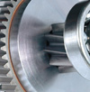

Em Meca, a STAHL iça o maior relógio de torre do mundo.
Correndo contra o tempo: em colaboração com o projeto do parceiro Prime Souce, STAHL CraneSystems Dubai forneceu 23 talhas de cabo de aço na cidade de Meca para a maior torre de relógio no mundo. Na hora certa, é claro.
Meca não é apenas a cidade mais sagrada do Islã, mas também é atualmente o lugar de um dos maiores edifícios do mundo. O hotel e complexo residencial de luxo Abraj al-Bait, também conhecido como Royal Clock Tower Hotel, está sendo construído bem no centro da cidade, e possui uma área total de 1,5 km ², 96 andares e um relógio tipo carrilhão a uma altura de 601 metros como grande atrativo. A torre se assemelha ao Big Ben de Londres, mas é seis vezes maior. Quando ele for concluído neste ano, a Torre do Relógio do Royal Hotel vai ser por algum tempo o segundo prédio mais alto no mundo. Somente o Chalifa Burj, em Dubai é ainda maior, com 830 metros.
O maior relógio de torre do mundo mostra sua imponência de cima da Mesquita Masjid al Haram desde agosto de 2010: com 80 m de altura, 65 m de largura, os mostradores têm 39 m de diâmetro. Cada um dos quatro mostradores é ornamentado com 98 milhões de vidros Tessera em mosaico. Mais de 2 milhões de LEDs fornecem a iluminação; cinco vezes por dia, no momento da oração, os mostradores acendem as luzes em verde. O relógio foi projetado para ser visto a uma distância de cerca de 20 km, e como se apresenta ao lado da mesquita sagrada, espera substituir Greenwich como ponto de referência temporal - para o mundo islâmico, pelo menos.
Para a instalação do relógio gigantesco, a STAHL CraneSystems forneceu 23 talhas de cabo de aço instaladas em pontes rolantes de parede e guindastes giratórios de parede em diferentes alturas na fachada da torre. O projeto foi planejado e concluído pela subsidiária STAHL CraneSystems de Dubai, e o Grupo Prime Source, da Arábia Saudita, foi o parceiro do projeto. “Devido ao cronograma do projeto muito apertado o cliente estava procurando um fornecedor de equipamentos com grande experiência para o projeto," diz Frank Hildebrandt, diretor da STAHL CraneSystems em Dubai. “Sem o excelente apoio do nosso parceiro Prime Source, o projeto não teria sido possível." Hildebrandt foi capaz de demonstrar experiência em projetos especiais desde a fase de negociação: menos de 24 horas se passaram desde o contato inicial ao pedido - incluindo a especificação técnica e a cotação para os primeiros oito guindastes - o último guindaste foi erguido quatro meses depois.
Ambos os componentes do mostrador e as inúmeras partes do revestimento do edifício tiveram de ser transportados pela parte de fora do edifício, guindastes de coluna foram descartados para este trabalho. Pontes de parede e guindastes giratórios de parede cobrem toda a área ao redor da torre. As pontes rolantes de parede trabalham ao longo dos trilhos e os guindastes giratórios de parede formam uma franja e movem as cargas pelos cantos do edifício. As talhas de cabo de aço erguem entre 3 e 6 t e são controladas por rádio de controle remoto. A altura máxima de elevação é 120m.
Os problemas só surgiram durante o processo de aprovação: como pontes rolantes de parede nunca foram usadas em tais alturas, as autoridades responsáveis tinham, antes de tudo, que serem convencidas de que este projeto era seguro. Graças aos cálculos detalhados elaborados pela STAHL CraneSystems, as autoridades foram finalmente convencidas e concederam a aprovação.
O Roya Clock Tower Hotel está para se tornar o novo símbolo do mundo islâmico, e já é um sinal de mudança na região. A crescente industrialização nos países muçulmanos permite que um número cada vez maior de adeptos poderá realizar o hajj, a peregrinação santa a Meca. O aumento do número de peregrinos deu origem a um boom de construção positiva em Meca, que está sendo literalmente coroada pela Royal Clock Tower da construtora árabe do Grupo Bin Laden.
Além do hotel de 5 estrelas que pertencem à cadeia Fairmont, a construção tem mais de 800 apartamentos, um centro de conferências para 1500 pessoas, uma sala de oração para 3800 adeptos, um observatório lunar e um Museu do Islã. O parque de estacionamento multi-andares tem espaço para 780 carros e 10 ônibus, e também é possível chegar através da estação ferroviária integrada ou em um dos dois helipontos. Um centro comercial de quatro andares planejado ao longo de vários temas recria mercados tradicionais de todas as regiões do mundo árabe. O complexo foi inaugurado no início do Ramadã em agosto de 2010, e deve ser finalmente concluída antes do final deste ano.
Produtos STAHL:
- Talha elétrica de corrente
- Talhas elétricas de cabo de aço
- Ponte rolante apoiada univiga
- Ponte rolante apoiada dupla-viga
- Pontes rolantes suspensas
- Guindaste giratório
- Monovias
- Blocos de rodas
- Kit de componentes
Peças sobressalentes; manutenção preventiva e corretiva
Consultoria especializada em transporte e movimentação de carga e fornecimento de componentes para outros fabricantes.
Todos os equipamentos podem ser fornecidos na versão á prova de explosão.